今天要做四件事
為什麼這四件就是你們在問卷裡寫「最花時間」的事。今天做完，回去就能用。
1 學會用它
13:40–14:25
給它資料夾、選權限、看規矩、下指令
2 做月報
14:25–15:05
丟 Excel 給它，它拆組合、算系列、標來源
3 做客服資料夾
15:15–15:50
一個品牌一個資料夾，問它跨品牌問題
4 做活動的圖
15:50–16:25
企劃 → 文案 → 圖，只改一處不會亂
每一件事都是：我先做給你看 → 換你做 → 一起看結果
月報、客服、活動的圖，都交給它
今天要做什麼、三個規矩、Codex 跟 ChatGPT 差在哪。
為什麼這四件就是你們在問卷裡寫「最花時間」的事。今天做完，回去就能用。
13:40–14:25
給它資料夾、選權限、看規矩、下指令
14:25–15:05
丟 Excel 給它，它拆組合、算系列、標來源
15:15–15:50
一個品牌一個資料夾，問它跨品牌問題
15:50–16:25
企劃 → 文案 → 圖，只改一處不會亂
每一件事都是：我先做給你看 → 換你做 → 一起看結果
為什麼你們手上全是客戶的秘密。今天學方法，不能把客戶的資料拿去練。
今天的品牌「沛然保健」是編的，數字是假的，方法是真的。
銷售數據、合約、檔期、名單。那是別人的秘密。
哪些資料可以用、放哪裡。今天學方法，規矩回去對。
為什麼要先知道它跟你用慣的 ChatGPT 哪裡不一樣，才會懂為什麼第一件事是「給它一個資料夾」。
你丟檔案進去，它回答你。
改完的東西你自己下載、自己整理。
關掉視窗，它忘了你是誰。
你給它一個資料夾。
它自己讀檔、改檔、做表、做圖，存回去。
資料夾裡有一張規矩，它每次都先看。
所以今天第一件事：給它一個資料夾。
四件事：給資料夾、選權限、看規矩、下指令。每一件都有為什麼、都有步驟。
為什麼等一下所有步驟都在這三個地方，先認得它們，後面才跟得上。
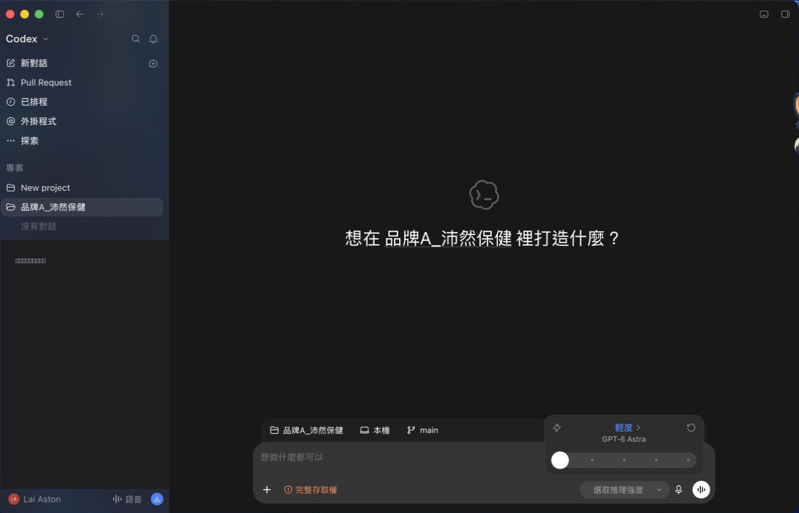
為什麼它只會動這個資料夾裡的東西。你是先圈一塊地給它，不是把整台電腦交給它。
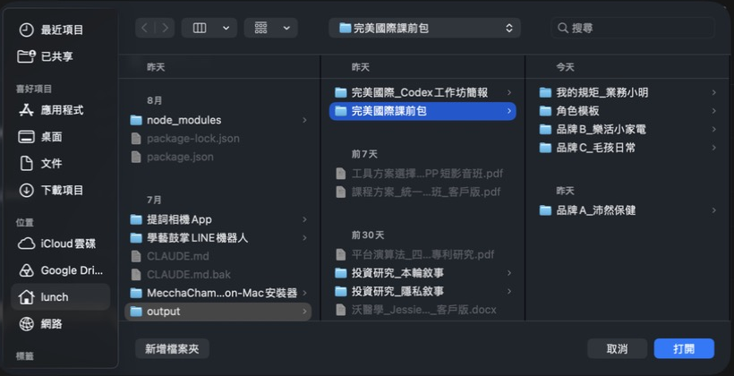
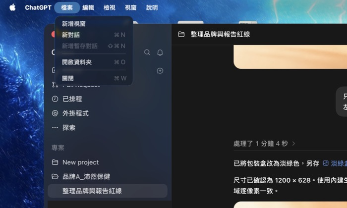
為什麼它會動你的檔案。先讓它「在資料夾裡自己做、要出去就問你」，等你熟了再放。
為什麼它每次開工都先讀這張。重要的事寫一次就好，不用每次重講；等一下改一行，你會看到結果跟著變。
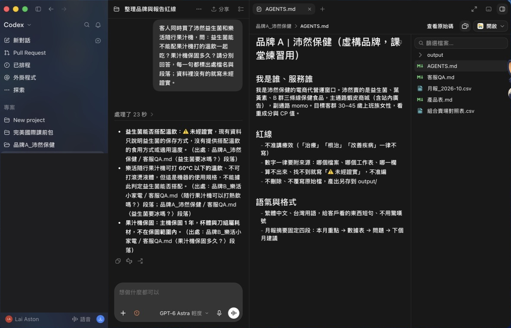
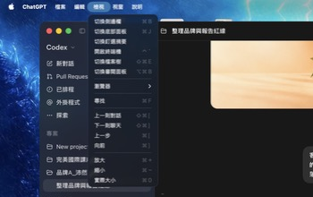
我是誰、服務誰→ 它寫東西的立場
不可以→ 它不能踩的線
做完給我→ 你驗收的標準
只寫每次都要知道的。寫太多它反而抓不到重點。
為什麼它不知道你腦子裡的事。五格就是把「要什麼、給誰、背景、紅線、怎麼交」一次講完，它才不會亂猜。
產出什麼
客戶？主管？設計？
它不知道的事
紅線
格式、幾版、存哪
我要做：沛然益生菌 60 包的新品上架節奏表。給誰看：客戶窗口。背景：11 月在蝦皮商城上架，主打 60 包裝，有站內廣告預算。不可以：療效字眼。做完給我：上架前後 4 週的表格，加 3 個標題。
小心Enter 就會送出。想換行按 Shift＋Enter。
為什麼交東西給它之前，先確認它真的讀了規矩。確認過，之後才敢把月報交給它。
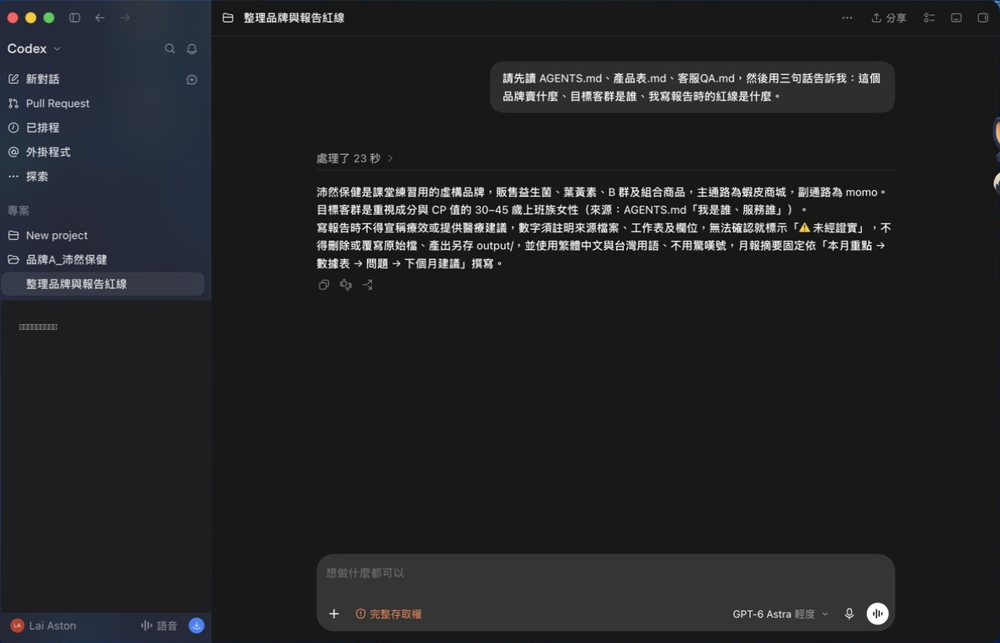
請先讀 AGENTS.md、產品表.md、客服QA.md，然後用三句話告訴我：這個品牌賣什麼、目標客群是誰、我寫報告時的紅線是什麼。
為什麼親手看到「改一行規矩，結果就變」，你以後才會回去改規矩，而不是每次重打一大段指令。
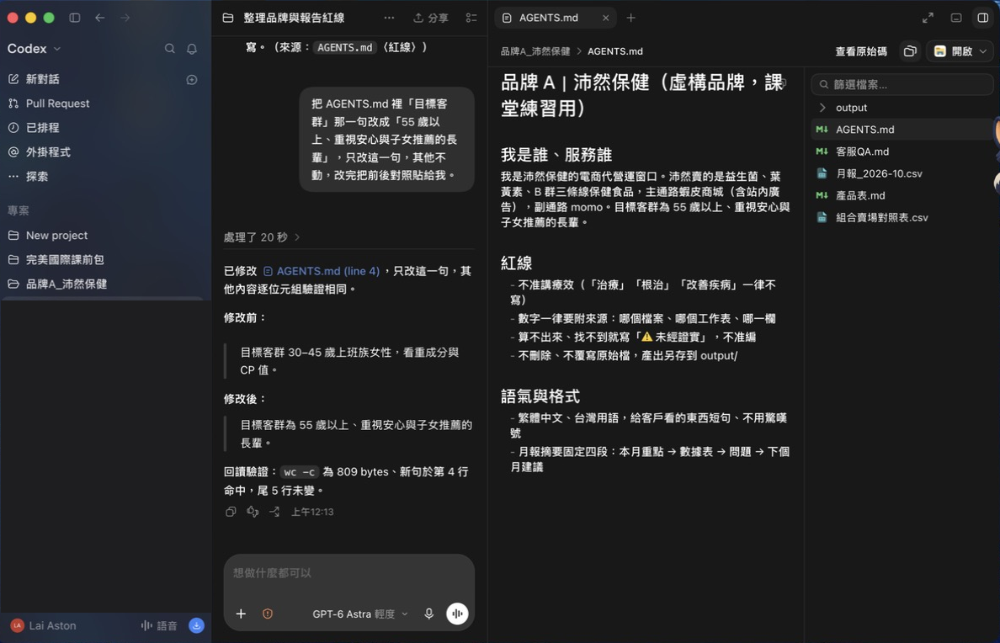
我要做：沛然益生菌 60 包的新品上架節奏表。給誰看：客戶窗口。背景：11 月在蝦皮商城上架，主打 60 包裝，有站內廣告預算。不可以：療效字眼。做完給我：上架前後 4 週的表格，加 3 個標題。
我要做：沛然益生菌雙十一活動企劃。給誰看：客戶窗口。背景：主推益生菌 30 包與 60 包，蝦皮商城為主，有站內廣告預算。不可以：療效字眼、沒有依據的折扣數字。做完給我：活動架構與 4 週檔期表。
我要做：腸胃護眼組的蝦皮商品頁文案。給誰看：消費者。背景：組合＝益生菌 30 包＋葉黃素 30 粒，售價 1490。不可以：療效字眼。做完給我：3 個標題＋一段 80 字描述，兩版。
把 AGENTS.md 裡目標客群那一句改成『55 歲以上、重視安心與子女推薦的長輩』，只改這一句，其他不動，改完把前後對照貼給我。
為什麼同一題、同一個人、只差規矩一行。看到差多少，你就知道規矩比指令重要。
只講改了哪一行。
以後覺得它答得爛，先問自己四件事：資料夾給對了嗎？權限卡住了嗎？規矩寫了嗎？五格填滿了嗎？
丟 Excel 給它。它拆組合、算系列、每個數字寫來源。
為什麼這是行銷企劃同仁在問卷裡自己寫的。每個月、每個品牌都要重做一次，所以值得交給它。
「腸胃護眼組」賣了 1 盒，要手動拆成益生菌 1 ＋葉黃素 1，再加回各系列。每個月、每個品牌、重做。
資料夾裡放一張「組合對照表」。它自己拆、自己加總、自己寫來源。下個月換一份 CSV，再跑一次。
關鍵是那張對照表：它不會自己知道組合裡有什麼，你要給它。
為什麼它主動講出假設，你才知道哪裡要確認。月報最怕的不是算得慢，是它偷偷幫你決定。
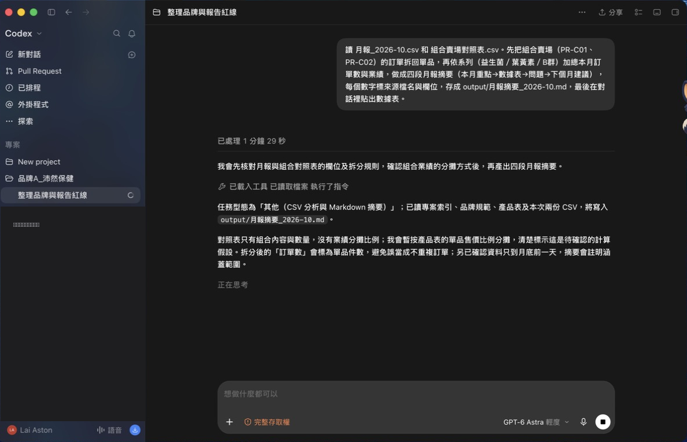
讀 月報_2026-10.csv 和 組合賣場對照表.csv。先把組合賣場（PR-C01、PR-C02）的訂單拆回單品，再依系列（益生菌／葉黃素／B群）加總本月訂單數與業績，做成四段月報摘要（本月重點→數據表→問題→下個月建議），每個數字標來源檔名與欄位，存成 output/月報摘要_2026-10.md，最後在對話裡貼出數據表。
為什麼客戶問「這數字哪來的」，你要答得出來。來源寫到檔名與欄位，就答得出來。
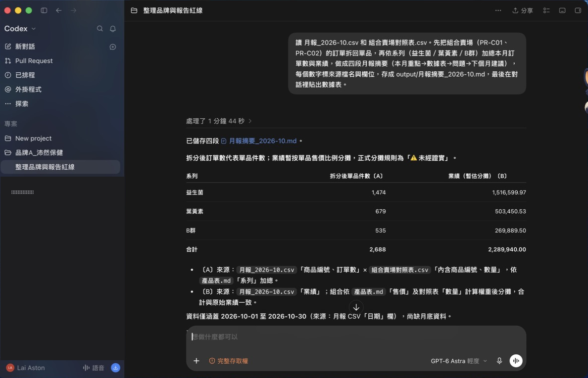
為什麼它會錯。你不用會算，但要有一套三秒鐘的檢查法，才敢把東西交出去。
它說做好了 → 要它給檔案大小、數字出處。
查不到就要寫「未經證實」，不准編。
文案、標題讓它出 2–3 個，你來選。
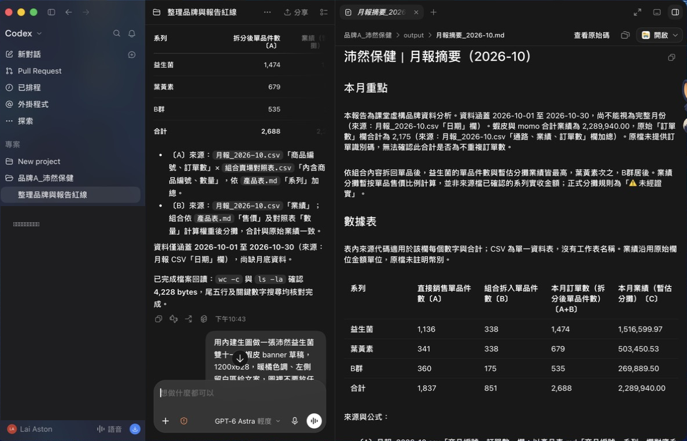
為什麼A 是把今天的月報法練一次。B 是把規矩檔搬到你自己的職務上，那個資料夾就是你的 AI 助理。
用 角色模板/AGENTS_業務提案顧問.md 幫我在這個資料夾建 AGENTS.md，模板裡的空格一題一題問我，問完再寫檔。
用 角色模板/AGENTS_行銷企劃.md 幫我在這個資料夾建 AGENTS.md，模板裡的空格一題一題問我，問完再寫檔。
用 角色模板/AGENTS_設計.md 幫我在這個資料夾建 AGENTS.md，模板裡的空格一題一題問我，問完再寫檔。
為什麼差別全來自規矩檔那三行。看懂這點，你回公司就知道該改哪裡。
一位業務、一位設計。差別全來自那三行。
我丟一題資料裡沒有的數字。它編了嗎？
同一招，換成當天的 CSV，就是日報。
帶走：你剛剛建的那個資料夾。回公司換成真品牌，它就是你的月報助理。
一個品牌一個資料夾。人請假，資料夾不會請假。
為什麼三個品牌各一個資料夾，再把裝著它們的上一層資料夾打開。問一題，它會去三個資料夾裡找，還告訴你出處。
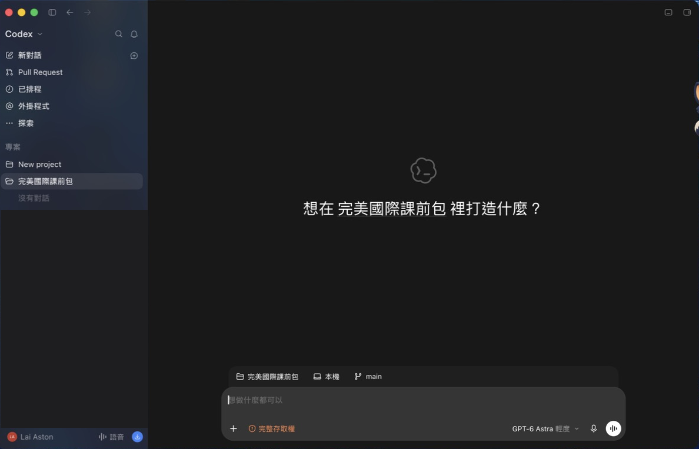
為什麼客服不用再一個一個問負責人。先問資料夾，答不出來再問人。
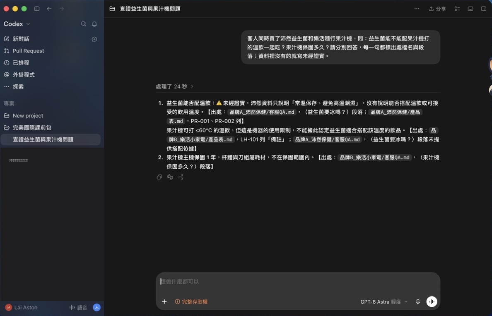
客人同時買了沛然益生菌和樂活隨行果汁機，問：益生菌能不能配果汁機打的溫飲一起吃？果汁機保固多久？請分別回答，每一句都標出處檔名與段落；資料裡沒有的就寫未經證實。
為什麼第 4 步是要你親眼看到：對話換新的，資料夾裡加的東西還在。所以要記的東西放資料夾，不是放對話。
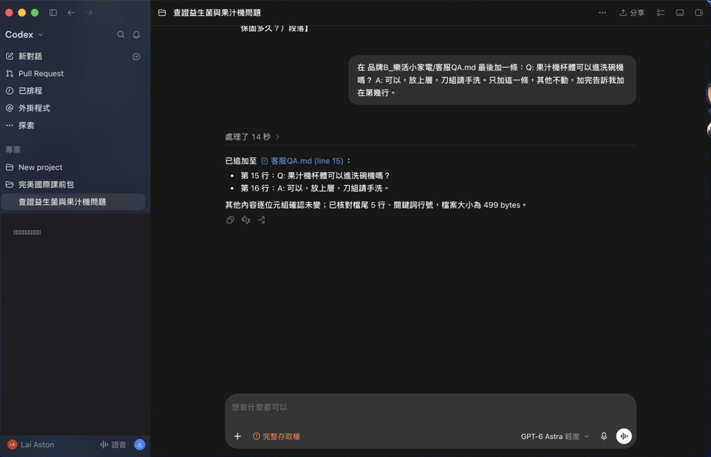
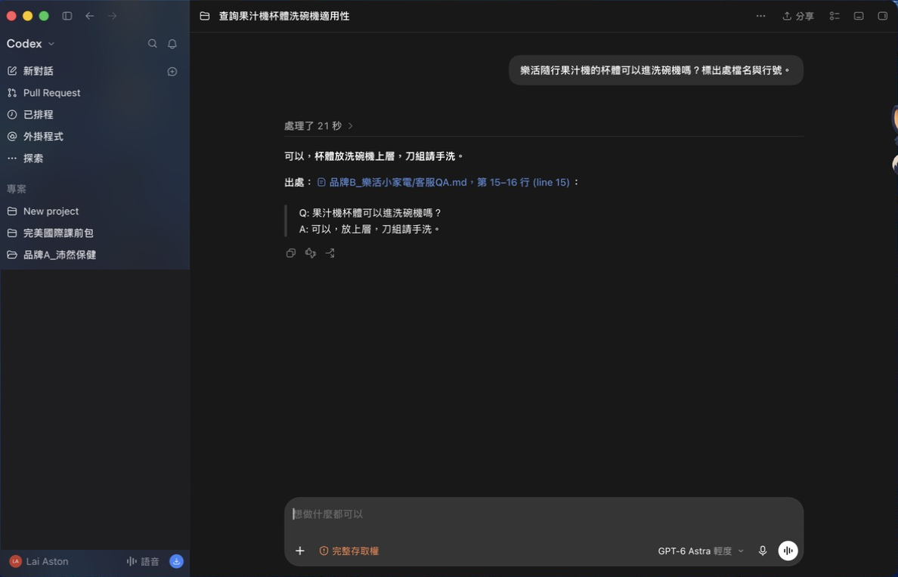
為什麼這一題就是客服同仁每天的工作。資料夾在，負責人請假了，誰接得起來？
有同學問：「問太多會變慢，要刪舊對話嗎？刪了它會忘嗎？」
它腦袋裝太多了。一個階段做完，開新對話。
對話裡的會忘。資料夾和規矩檔不會。
放進資料夾，不要只留在對話裡。
企劃 → 文案 → 圖，三步接力。只改一處，不會全亂。
為什麼企劃、文案、圖是同一檔活動。放同一個資料夾，它做圖的時候看得到企劃，才不會各做各的。
業務／企劃做
用規劃模式：「先列計畫，問我 3 個不確定的事」
業務／企劃做
商品頁 3 個標題＋banner 文案 2 版
設計做
先出 brief，再出草稿，字不放進圖
為什麼字不放進圖？文案一定會改。字另外放，改文案不用重畫圖。設計拿到乾淨底圖，最後自己上。
為什麼大事直接說「幫我做一個活動」一定做歪。先讓它列計畫、反問你，問清楚再動手。
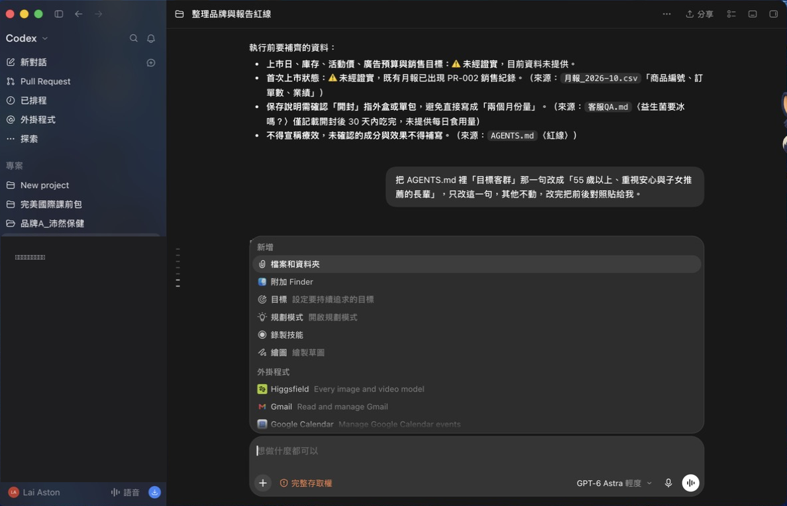
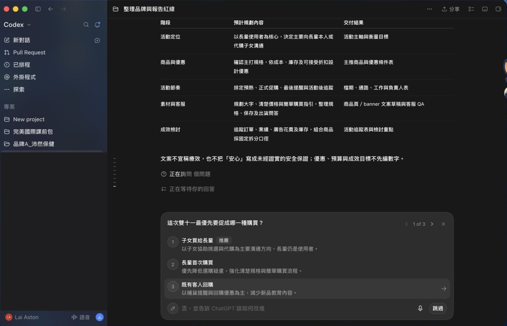
為什麼草稿不用等設計排時間。先有一張方向圖，大家才有東西可以討論。
為什麼有同學說：請它改圖就整個亂掉。亂掉是因為它重畫了一張。你要告訴它：只改這裡，其他不要動。
只改一處：把剛剛那張 banner 右側的包裝盒換成淡綠色，其他構圖、光線、左側留白全部不要動，另存一個新檔。
按「＋」→「檔案和資料夾」附上原圖，不要重新描述整張
回覆下面的 Fork 分支＝遊戲存檔。改壞了回來
為什麼AI 出的是方向草稿。能不能用、哪裡假、怎麼修，只有設計看得出來。
讀企劃和文案，寫 brief。
出 3 張方向草稿。
檢查尺寸、留白、沒有字。
判斷哪張能用、哪裡假。
合成、修片、字體、上文案。
跟業務說：brief 缺什麼。
為什麼業務企劃把需求寫清楚，設計拿到的才是能用的 brief。這 20 分鐘練的是把需求交清楚。
為什麼重點不是圖多漂亮，是業務企劃第一次用設計聽得懂的話交需求。
1 張圖、1 句文案。設計同仁講 30 秒。
brief 寫得夠不夠讓設計少來回。缺的通常是：尺寸、禁用元素、品牌色、文案層級。
讓它每天自己做、五樣帶走。
為什麼每天一樣的事（例如業績回報），不要再靠人記得。設一次，它每天 9 點自己跑。
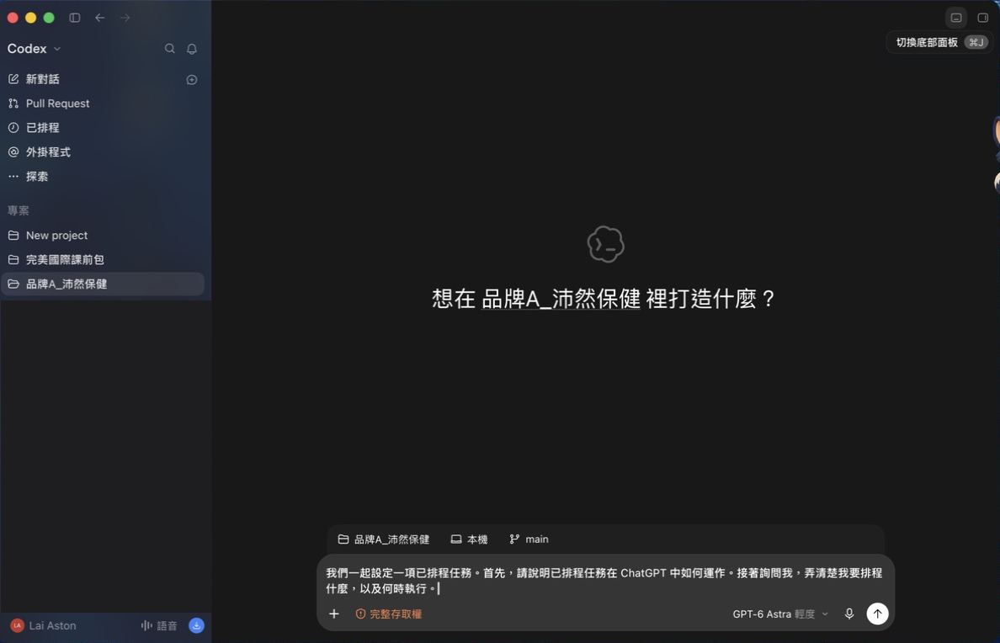
為什麼講出口的事，做的機率高很多。每組講一句回去第一個要建的資料夾。
以後對任何 AI 都這樣講
你的 AI 助理
一個品牌一個，上一層當客服台
有證據？有標？給我選？
品牌 A／B／C、角色模板、月報與對照表
之後想問什麼，找阿峰（黃敬峰老師），他會轉給我。
今天所有要打的字都在這裡，按「複製」再貼進 Codex。
請先讀 AGENTS.md、產品表.md、客服QA.md，然後用三句話告訴我：這個品牌賣什麼、目標客群是誰、我寫報告時的紅線是什麼。
我要做：沛然益生菌 60 包的新品上架節奏表。給誰看：客戶窗口。背景：11 月在蝦皮商城上架，主打 60 包裝，有站內廣告預算。不可以：療效字眼。做完給我：上架前後 4 週的表格，加 3 個標題。
我要做：沛然益生菌雙十一活動企劃。給誰看：客戶窗口。背景：主推益生菌 30 包與 60 包，蝦皮商城為主，有站內廣告預算。不可以：療效字眼、沒有依據的折扣數字。做完給我：活動架構與 4 週檔期表。
我要做：腸胃護眼組的蝦皮商品頁文案。給誰看：消費者。背景：組合＝益生菌 30 包＋葉黃素 30 粒，售價 1490。不可以：療效字眼。做完給我：3 個標題＋一段 80 字描述，兩版。
把 AGENTS.md 裡目標客群那一句改成『55 歲以上、重視安心與子女推薦的長輩』，只改這一句，其他不動，改完把前後對照貼給我。
讀 月報_2026-10.csv 和 組合賣場對照表.csv。先把組合賣場（PR-C01、PR-C02）的訂單拆回單品，再依系列（益生菌／葉黃素／B群）加總本月訂單數與業績，做成四段月報摘要（本月重點→數據表→問題→下個月建議），每個數字標來源檔名與欄位，存成 output/月報摘要_2026-10.md，最後在對話裡貼出數據表。
用 角色模板/AGENTS_業務提案顧問.md 幫我在這個資料夾建 AGENTS.md，模板裡的空格一題一題問我，問完再寫檔。
用 角色模板/AGENTS_行銷企劃.md 幫我在這個資料夾建 AGENTS.md，模板裡的空格一題一題問我，問完再寫檔。
用 角色模板/AGENTS_設計.md 幫我在這個資料夾建 AGENTS.md，模板裡的空格一題一題問我，問完再寫檔。
把這份月報摘要改寫成給客戶的提案開場，兩個版本，各附一句自評。
客人同時買了沛然益生菌和樂活隨行果汁機，問：益生菌能不能配果汁機打的溫飲一起吃？果汁機保固多久？請分別回答，每一句都標出處檔名與段落；資料裡沒有的就寫未經證實。
在 品牌B_樂活小家電/客服QA.md 最後加一條：Q: 果汁機杯體可以進洗碗機嗎？ A: 可以，放上層，刀組請手洗。只加這一條，其他不動，加完告訴我加在第幾行。
樂活隨行果汁機的杯體可以進洗碗機嗎？標出處檔名與行號。
幫沛然益生菌規劃雙十一活動，先列計畫，並問我 3 個你不確定的事，我回答完你再動手。
根據剛剛的雙十一企劃，寫蝦皮商品頁 3 個標題，和品牌館 banner 文案 2 版，各附一句自評。不可以有療效字眼。
讀剛剛的企劃和文案，寫一份 banner 的 brief：尺寸 1200×628、主視覺、留白區、禁用元素、品牌色。
照這份 brief 用內建生圖出 1 張 banner 草稿，1200×628，圖裡不要放任何文字，存到 output/。
只改一處：把剛剛那張 banner 右側的包裝盒換成淡綠色，其他構圖、光線、左側留白全部不要動，另存一個新檔。
每天早上 9 點，讀品牌 A 資料夾最新的 CSV，用月報摘要的做法出一頁日報，存到 output/。